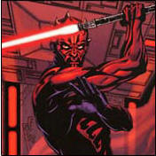

Forums galactiques > Taverne galactique : lieu de discussion informel > Dans le croiseur hyperatomique de dark maul 100%Rp
Pages : 1 2
| dark maul Réputation à la taverne : 13  14/07 ETU 23:11 | Score : 0 Détails **Dark maul alluma le panneau de controle qui menait au message éclair directement envoyé de Iridonia**
chhhh---------c..o..m.a.ndant dark maul nous .ve..nons d'avoir les informations du commandant c...t de ....t allias a...b.. 2: Grace a tous c'est commandants on a pu reunir une force assez sufisante pour ----a-----t---r-----------go-----v-e--chh c'est aussi grace a des ----c----ol--a qu'on a pu s'obtenir des s--------- entier rien que ----chh---hh ! une fois que le ------------t---a- est fini de constitué ----chh-- (avec la b---b- H--) Nous disposon de --------hh ect... Ca va fair mal ----chhh-la dem----- va -is----it- est les i--ot renaitre appart pour les commandant comme ----m- - -oi ! La transmition n'etait pas net mais j'ais comprie son message commandant kadaj continué l'operation de mon coté tout ce passe comme prevue. | ||
| dark maul Réputation à la taverne : 13 14/07 ETU 23:16 | Score : 0 Détails **Les chasseurs de sismock et darline continué leur attaque enver dark maul.**
**Un chaps arriva** Commandant dark maul nous venons de detruire la flotte de darline pour de bon ! Plus rien ne pourra nous arreté ! suite des transmitions dans 6 jours ! | ||
| dark maul Réputation à la taverne : 13 21/07 ETU 13:47 | Score : 0 Détails ** Dark maul médité quand soudain... **
chh--zzzzzz-h-hz-hz-hzz-h seigneur Maul seigneur Maul repondez ! [red] qui a t-il ?!? [/red] Nous venons de subir d'énorme perte sur le systeme 327 le commandant Arigliano Arguello a massacré toute nos troupe sur les planetes que nous avions volé il n'y avait aucune defence planetair sur toute les planetes,que des ressources et des bases de recherches ,il n'y a plus rien perssone n'a eu le temps d'evacuez tous on perie il reste au totale une planete prete a evacuez ! [red] je dois y allait peparé moi mon vaisseau sith! [/red] oui seigneur ! ** dark maul aprés 3 heures d'hyperespace arriva dans le systeme 327 ** [red] MON DIEU ! C'est pas vraie ! [/red] ** La flotte d'Arigliano Arguello etait majestueuse et etait rependue sur tout le systeme cette armée etait enorme ,dark maul comptemplé la flotte pour trouvé une faille quand soudain... ** KAMIKAZE KAMIKAZE KAMIKAZE KAMIKAZE KAMIKAZE ! ** grace a la force dark maul venait dans explosé 20 d'un coup une explosion giganteste retentie et 50 autre kamikazes detruit le vaisseau de dark maul une capsule fut ejecté rapidement et passa en hyperespace dark maul poussa une derniere parole "[red] j'ais echoué [/red]" et il s'evanouissa.** ** Dark maul arriva dans un systeme inconnue et s'ecrasa sur un asteroide** Dark maul etes vous la ?!? ** dark maul entendit la vois de son ancien maitre dark sidious** [red] oui (dit t-il d'une faible voie) [/red] Vous me faite honte ! Vous pouvez mieu fair !n'oublier pas l'objectif des siths! oublier vos chaps! prenez le pouvoir sur les siths ! arrivé jusqu'a la limite supreme du coté obscure tué les jedis !Je te laisse sur ces paroles maitre Maul. [red]non..je..aa..mait..tre. je je vais me ressésir maitre les obstacles des siths seront [/big] detruis ![/big] [/red] **dark maul repara la capsule et partie diréction son systéme ,il arriva dans le hangar de l'etoile des chaps utilisa la force pour se teleporté juste devant le générateur de tir et le diriga a l'interieure de l'etoile des chaps le tir fut programé au niveau maximum Dark Maul regla une minuterie de 30min et parta jusqu'au hangar quand il croisa des chaps armées ** Chaps: que faite vous !?! ** dark maul les trancha en deux avec son double sabre ! DM: sale traitre ! **un combat explosa entre plein de chaps armées de rayon paralisant, apres 25min dark maul resortie vivant le torse nue couver de blessure pas trés grave, puis il prit un vaisseau chaps et partie direction Korribanla planete des siths et une explosion ultra violente retentie dans l'etoile chaps qui enchaina des reactions chimique qui provoqua sa destruction en plusieur partie ** | ||
| dark maul Réputation à la taverne : 13 21/07 ETU 19:08 | Score : 0 Détails Un silence de mort retentissait dans les couloires de l'etoile des chaps des chaps carbonisé mort une brume grise longeaient les couloirs.
Dark maul etait sur kamino pour commandé une armée de clone troopers cette armée redoutable sera pret dans plusieur années. Dark sidious avait remis les idée en place de dark maul en controlant son esprit par la force et dark maul n'avait desormé plus qu'un objectif detruire les jedis et tué les traitre chaps ! Une troisieme guerre de clone allé eclaté pour les jedis. Pour les chaps de nouvelle mesure furent prise contre Dark Maul et ils deciderent d'aprofondire la recherche du dernier chaps. Une double guerre venait d'eclater pour dark maul entre les chaps et les jedis. | ||
| dark maul Réputation à la taverne : 13 21/07 ETU 19:52 | Score : 0 Détails chhhhhhh-------
Commandant ouvrait le feu ! BOOOOOOOOOOOOOOOM Un gigantesque tir inonique s'ecrasa sur le sanctuair de dark maul sur iridonia le tir detruisa tout sur son pasage y compris les habitant pas loin du sanctuair et ses tir continuere pendant de longue heure les chaps traque dark maul sans relache ! Mais en vain il ne le trouverent point. Chaps 125: il n'est pas dans le sanctuair! Lieutenant Chaps com17 :ra! c'est pas vraie! continué les recherches immediatement ! Chaps 125:Oui lieutenant ! Un holograme s'alluma et le chef des chaps aparue : Chapsakitation: avait vous dark maul ? Lieutenant Chaps com17 :pas encor chef! Chapsakitation : depechez-vous avant que je fasse mon rapport au grand maitre Al-kashi. Lieutenant Chaps com17 :oui chef ! Un holograme s'etein et le chef des chaps disparue. | ||
| dark maul Réputation à la taverne : 13 21/07 ETU 23:18 | Score : 0 Détails Dark maul etait cacher dans la taverne les controles chaps furent multiplié par 20 ils n'arretent pas ils cherchent sans arret !
Dark maul devait trouver un coin ou se cacher "IZakaYa " ! Dark maul y courue ! | ||
| dark maul Réputation à la taverne : 13 23/07 ETU 20:45 | Score : 0 Détails ** Les portes souvra **
Des chaps entrerent et chercha tous ce qui pourrait-etre reutilisés pour leurs ordre chapsique. Le croiseur etait dans un hangar de Iridonia son equipage n'etait pas constitué de chaps mais de mercenair,guerrier nikto,ou premier specimen de la nouvelle armée de clone de Maul son equipage a etait rangés sur le coté sous la menace des blasto-chaps dark maul lui ne ce tené pas loin il venait d'arivé sur la planete detruite et colonisé par les chaps,dark maul munie de son speeder arriva en aproche rapide du hangar pour delivré ses alliés et recupérer le croiseur. | ||
| dark maul Réputation à la taverne : 13 23/07 ETU 22:24 | Score : 0 Détails L'assaut de Dark Maul commenca immediatement il fonca sur les chaps avec son speeder et sauta au dernier moment le speeder fonca sur les chaps et les ecraserent contre le mur (il y avait pas assez de bout pour la mosaique de Tsukiyo) les autres chaps alerté par l'incident avait pour ordre de tirer sur tous ce qui bouge pas de pitier !
Dark maul atterie en mawachigerie (coup de pier)sur un chaps qui fut assomer tout de suite les autres chaps tirerent sur dark maul du mieu qu'ils pouvaient mais dark maul esquiva tous a une vitesse incroyable il aprocha les chaps et leur envoya une volé de coup de poing accompagné de la force se qui leurs brisa le crane en miete de chaps d'autre maitenait les otage et les firent montés au niveau superieure(:zone de carburant) dark maul finissa de eliminé les dernier chaps du hangar quand les chien chapstorz de Biggie Zounourss arriva dark maul essoufflé chercha une solution : BZ est mon allier ! comment fair ?!? dark maul ne chercha pas et envoya une savle d'eclaire de force sur les chiens enragé les finiserent grillés et dark maul monta au niveau superieure il vit les ses alliers pas loin libre, un piége ?!? un tir arriva sur le dos de dark maul. AaRrGg enfoiré ! Le lieutenant chaps 512 apparue. VOUS! C'est impossible vous etes mort ! Ferme la chaps ! dark maul lui envoya une poussé de force le lieutenant 512 s"ecrasa une un reservoir qui le presa et fut a aspergé de carburant humain. DM: pauvre idiot tu n'a aucune chance. Dark maul envoya une brindille d'eclair de force sur le chaps lieutenant et des enormes flames se forma sur le lieutenant. Chaps lieutenant 512: OAAAAAAAAAAAOAOAAAO ! Son dernier gesta porta sur son blaster il fisa un otage et tira une charge. Dark maul assista a sa mort en direct n'eyan rien pu fair augmenta sa haine envoya une poussé de force sur le chaps brulé la violence de la poussé arracha une partie du hangar. Une fois l'equipe au complet ils recupererent le croiseur et partie avant l'arriver de renfor chaps il fallait maitenant passé le blocus chaps dans l'atmosphére de la planete... | ||
| dark maul Réputation à la taverne : 13 23/07 ETU 22:43 | Score : 0 Détails Une fois le croiseur dans l'atmosphére Dark maul enclencha la commande de tir il ne se passa strictement rien les chaps on pris toute les munitions :c'est la fin disé le copilote , ferme la tu veux ? repondit dark maul les croiseur ionique chaps ne chercha pas a toucher le croiseur de dark maul au contraire ils ont fuis pas trés loin
DM: hein ? quesque ?!? DM: Il faut les contournés ! Et vite ! On apercu les croiseur d'Al-kachi pendant leur operation de paradie rouge. On apercu l'inferiorité du combat entre Al-kashi et ses enemie Al-kashi avait n'etement l'avantage ! DM: Un empire trés puissant se forme il va falloir se mefier d'eux. Copilote: ouép et c'est pas du leger ya du lourd la dedans ! DM: Oui a l'epoque ou j'etait avec les chaps j'ais remarqué la puissance de Al-kashi et ce n'est pas le seul un commandant du nom de Wotan aussi posséde une armée sans limite a ce qu'on dit enfin bref il va falloir rassemblé une armée en attendant la création des clones ! Copilote: ouép ta une cachette ?!? DM: Oué tenkiet mé le cap sur Rendilli ! Copilote: pas de probeme c'est partie ! **Le croiseur passa en hyperespace ** **Chez les chaps** Il est de retour chef ! Il va falloir s'en occuper et vite comprie ? Oui chef Chapsakitation ! | ||
| dark maul Réputation à la taverne : 13 29/07 ETU 21:15 | Score : 0 Détails ** Une fois sur rendilli**
Copilote: Je savais que c'etait la guerre mais la ! DM: C'est pas notre probleme ils font ce qu'ils veulent ! Copilote: ouais ouais je sais mais bon on pourrait aider les libertadores non ? ( dark maul souria ) DM: Tu rigole j'espere tu as bien vu que c'est foutu d'avance ! ils ont aucune chance face a l'empire ! ils ont surment un morale d'acier mais ca ne sufirra pas ! enfin bon esperons leur bonne chance quand meme ! Copilote: ouais ! DM: bon ils nous faut un croiseur neuf ! Je sais ou en trouver un ! | ||
| dark maul Réputation à la taverne : 13 29/07 ETU 21:20 | Score : 0 Détails Bon on va utiliser se transporteur chaps abandonner pour penetré le systeme chapsique une fois la bas ils nous faudra nous trouver un croiseur inonique en bon etat mais sans equipage chaps c'est pour ca qu'il nous fodra aller a la zone de construction des croiseurs inonique chaps, on va en chopé un tous neuf pas encor utilisé ok les gars ?!?
(l'equipage reponderent tous pas de probleme!) Allé on embarque les gars ! une fois le croiseur inonique prit je vous direz la suite ! | ||
| Biggie Zounourss Réputation à la taverne : -74  31/07 ETU 20:49 | Score : 0 Détails [hrp] trop classe ton rp c'est aussi chiant que ceux qu'on voit d'habitude ! [hrp]
| ||
| dark maul Réputation à la taverne : 13 03/08 ETU 11:18 | Score : 0 Détails Pour dark maul il etait temps de fuire lE
commandant chiana allé passer a l'action et pour de bon ! DM: Ok hyperespace vers un systeme boulet histoir de se recuperer quelque planete ! Et la gigantesque armée de dark maul passa en hyperespace le temps de finir l'HYPERATOMIQUE | ||
| Chiana Réputation à la taverne : 1345  03/08 ETU 11:53 | Score : 0 Détails Gigantesque armée ?
Quel humour, vous méritez un bon +1 ... Et Biggie Zounourss a toujours rien compris au jeu ... Quand sera-t-il donc enfin détruit ? | ||
| dark maul Réputation à la taverne : 13 03/08 ETU 18:39 | Score : 0 Détails Jamais cher commandant chiana vous pouvez toujours rever mon cher monsieur je vais vous apprendre la politesse moi. Vous osez parler de mon armée gigantesque? Eh oui elle n'est peut-etre pas gigantesque par rapport a la vôtre mais elle est assez grande ne vous inquiétez pas monsieur.
(veuillez respecter le topic des autres...) | ||
| dark maul Réputation à la taverne : 13 06/08 ETU 22:02 | Score : 0 Détails Il ne restait presque plus rien...
Son armée reduite dangereusement ,ses plantes colonisés et son morale detruis la fin de dark maul aller bientot commencer... Saleté de chiana je jure de me vanger ! | ||
| dark maul Réputation à la taverne : 13 06/08 ETU 22:06 | Score : 0 Détails Dispertion des flottes dans toute la galaxie sur plusieur systeme different.
DM: ils ne se debarasseront pas de moi comme ca ! | ||
| Chiana Réputation à la taverne : 1345 07/08 ETU 02:44 | Score : 0 Détails Vous avoir "Sans Planète Fixe" est déjà un plaisir tout tantrique ... Dispersez-vous, cher Dark Maul, dispersez-vous ... Vous serez alors comme le sucre dans le lait : partout et nulle part ...
En espérant que cela vous rappelle vos MP sur la prétendue faiblesse de ma flotte ... | ||
| Dark-Maul Réputation à la taverne : 6  11/08 ETU 10:54 | Score : 0 Détails **Dark Maul reaparue de nouvaux mais cette fois seul dans un systeme fermé puis il regarda au alentour puis vit une affiche de l'empire des sens et il reconnue chiana il rigola**
Ha ha ha ma vengence sera terrible ! | ||
| Dark-Maul Réputation à la taverne : 6 15/08 ETU 13:56 | Score : 0 Détails ** Dark Maul evoluer a une vitesse considerable car cette
fois maitenant un systeme lui etait reservé et des alliés a ses cotés il y avait tous pour reussir ** puis il se mit a parler en zabrak : |-|â |-|â |-|â ¢|-|iâñâ Þr0fiTê §'êñ ßiêñ Ðê Tê§ Þ£âñêTê§ Ðê M0ñ âñ¢iêñ §y§TêMê ¢âr ßiêñT0T ê££ê §êr0ñT â MØÏ 0µi â M0i ! Tµ v⧠Þâyêr Þ0µr ¢ê qµê Tµ â fâiT Tµ âµrâi§ е Mê Tµêr qµâñÐ Tµ êñ âvâiT £'0¢¢â§i0ñ âÐiêµ ¢|- |iâñâ âÐiêµ ! $TµÞiÐê |-|µMâiñ |
Pages : 1 2
Forums galactiques > Taverne galactique : lieu de discussion informel > Dans le croiseur hyperatomique de dark maul 100%Rp